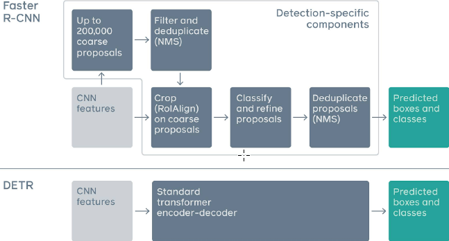
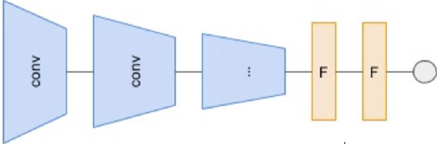

1 Attention and transformer
- Transformers are primarily encoder decoder model.
- Encoder takes input sentence and creates a bottleneck representation.
- Bottleneck is smaller in size compared to input
- In general, Decoder takes bottleneck as an input.And reconstructs the input back.
- It is a translation task. The quality of the translation depends on the summary provided by the encoder.
- RNN or LSTM Doesn’t provide a good Summary.
Key component of the transformer:
Self attention.
Multi head attention.
Positional encoding.
Encoder Decoder architecture.
Transformers in a Nutshell:
Self-Attention
- Consider two input sentences we want to translate:
- The animal didn’t cross the street because it was too tired.
- The animal didn’t cross the street because it was too wide
- “it” refers to “animal” in first case, but to “street” in second case; this is hard for traditional Seq2Seq models to model
- As the model processes each word, self-attention allows it to look at other positions in input sequence to help get a better encoding
2 Self-Attention Explained
- STEP 1

- Create three vectors from encoder’s input vector (x_i)
- Query vector (q_i)
- Key vector (k_i)
- Value vector (v_i)
- These are created by multiplying input with weight matrices W^Q,W^K,W^V learned during training.
- In the paper q,k,v \in \mathbb{R}^{64} and x \in \mathbb{R}^{512}
- q, k, v doesn’t have to be smaller then x, It was tend to make computation of multi head attention constant.
- Dimensions of W^Q,W^K,W^V are 512\times 64
- Create three vectors from encoder’s input vector (x_i)
- STEP 2
- Calculate self-attention scores : score all words of input sentence against themselves;
- Take dot product of query vector with key vector of respective words.
- E.g. for input “Thinking”, first score would be q_1 \cdot k_1 (with itself); second score would be dot product of q_1 \cdot k_2 (with ”Machines”), and so on …
- Scores then divided by \sqrt{\text{length}(k)}
- This is Scaled Dot-Product Attention, this design choice leads to more stable gradients.
- STEP 3
- Softmax used to get normalized probability scores; determines how much each word will be expressed at this position.
- Clearly, word at this position will have highest softmax score, but sometimes it’s useful to attend to another word that is relevant.
- STEP 4
- Multiply each value vector by softmax score; It Keeps values of word(s) we want to focus on intact, and drown out irrelevant words.
- STEP 5
- Sum up weighted value vectors : Produces output of self-attention layer at this position (for first word).
3 Self-Attention: Illustration
4 Multi-Head Attention
- Improves performance of the attention layer in two ways:
- Expands model’s ability to focus on different positions. In example above, z_1 contains a bit of every other encoding, but dominated by actual word itself
- Gives attention layer multiple “representation subspaces”; we have not one, but multiple sets of Query/Key/Value weight matrices; after training, each set is used to project input embeddings into different representation subspaces.
5 Multi-Head Attention: Illustration
6 Positional Encoding
- Unlike RNN and CNN encoders, attention encoder outputs do not depend on order of inputs.
- But order of sequence conveys important information for machine translation tasks and language modeling.
- The idea: Add positional information of input token in the sequence into input embedding vectors. PE_{pos,2i}=\sin\left(\frac{pos}{1000^{\frac{2i}{d_{emb}}}}\right) PE_{pos,2i+1}=\cos\left(\frac{pos}{1000^{\frac{2i}{d_{emb}}}}\right)
- Final input embeddings are concatenation of learnable embedding and positional encoding.
7 Encoder
- Stack of N=6 identical layers

- Each layer has a multi-head self-attention layer and a simple position-wise fully connected feed forward network.
- Each sub-layer has a residual connection and layer-normalization; all sub-layers output data of same dimension d_{\text{model}} = 512
8 Decoder
- Stack of N=6 identical layers
- Each layer has two sub-layers of multi-head attention mechanisms and one sub-layer of fully-connected feedforward network.
- Similar to encoder, each sub-layer adopts a residual connection and a layer-normalization.
- First multi-head attention sub-layer is modified to prevent positions from attending to subsequent positions, as we don’t want to look into future of target sequence when predicting current position.
9 Transformers: Full Architecture
10 Transformers in NLP: Language Understanding
- Pre-training language models showed impressive results on multiple natural language processing tasks like natural language inference, paraphrasing, named entity recognition and question answering.
- To apply the learnt language representations to downstream tasks, two strategies are followed: feature − based and fine − tuning.
- Feature-based methods develop task specific architectures and utilize the pre-trained knowledge in solving the task
- Fine-tuning approaches try to minimize task-specific parameters and solve the task by fine-tuning pre-trained parameters.
- Both these strategies used unidirectional language models for pre-training which restricted the power of the language representations for fine-tuning
- Jacob et al solved this problem by using a ‘masked language model’ (MLM) pre-training objective in their paper, BERT.
- Recent works achieved performance gains on many NLP tasks by pre-training on large data and fine-tuning on specific tasks
- Although task-agnostic, these methods still require large task-specific data for fine-tuning. In contrary, humans can learn a new language task by simple instructions only.
- In an attempt to bridge this gap, Brown et al show that we can improve task-agnostic few-shot performance by scaling up language models.
- Their model, named GPT-3 is trained with 175 billion parameters and it shows significant performance gain when tested in few-shot setting.
11 Transformers in Computer Vision: Object Detection


- Image split into fixed-size patches
- Each of them linearly embedded
- Position embeddings added to resulting sequence of vectors
- Patches fed to standard Transformer encoder
- In order to perform classification, standard approach of adding an extra learnable “classification token” added to sequence.
12 Transformers in Computer Vision: General Purpose Backbone
- Problems in the previous transformer architectures:
- Tokens are of fixed scale in NLP problems, which is not suitable in vision tasks.
- Computational complexity is quadratic to image size in ViT model and using high resolution images for dense pixel level prediction tasks would make the computation intractable.
- To solve these problems, Liu et al proposed Swin Transformer with hierarchical feature maps and linear computational complexity.
- An image is split into non-overlapping patches and to produce hierarchical feature maps, these patches are merged as we go deep into the network.
- The original transformer block is replaced by a Swin transformer block that uses shifted windows and generates feature maps with a linear computational complexity.
13 Transformers in other applications
- Transformers now used in various applications like image classification, object detection/tracking, speech recognition and graph representation
- Dong et al proposed Speech-Transformer that proposes a 2D-Attention mechanism that attends to both time and frequency axes jointly
- Liu et al introduced a self-supervised speech pre-training method called TERA which uses alteration along three orthogonal axes to pre-train Transformer Encoders on a large amount of unlabeled speech
- Graph Neural Networks (GNNs) used to learn node representations on fixed and homogeneous graphs.Yun et al proposed Graph Transformer Networks (GTNs) that are capable of learning from mis-specified and heterogeneous graphs.
- Ying et al proposed Graphormer, which attained excellent results on a broad range of graph representation learning tasks.
14 Deep Generative Models
Discriminative vs Generative Models
- Discriminative models: Learn conditional distribution p( y|x)
- Generative models: Learn joint distribution p( x,y ) and infer conditional through Bayes’ rule
- Advantage of generative models
- Potential to understand and explain the underlying structure of input data even when there are no labels
- Simulate environments
- Multimodal learning
Applications of Deep Generative Models
- (High resolution/Interactive) Image generation
- Debiasing
- Outlier detection
- Image inpainting
- Text to image generation
- Image to image translation
Taxonomy of Generative Models
15 Generative Adversarial Networks
- Generator
- Discriminator
 - Generative Adversarial Networks
- Generator G picks a point z from noise distribution, and produces a sample.
- G(z) represents a mapping from noise distribution to the input space.
- G(\cdot) is a network
- Discriminator D takes input from both real world images and generated image G(z), and assigns the correct label to both real world image data and generated image.
- We simultaneously train G and D
15.1 GAN: 2 Player Game
Generator G tries to:
- maximize D(G(z)) or,
minimize (1- D(G(z))) - minimize D(x)
- So, we can combine both and get: \boxed{\text{minimize } D(x) + (1-D(G(z)))}
Discriminator D tries to:
- maximize D(x)
- minimize D(G(z)) or,
maximize (1 -D(G(z))) - So, we can combine both and get: \boxed{\text{maximize } D(x) + (1-D(G(z)))}
So finally both plays mix max game: \boxed{\min_G \max_D D(x) + (1-D(G(z)))} To analyze average behaviour, we will take expectation: \boxed{\min_G \max_D \mathbb{E}[D(x)] + \mathbb{E}[(1-D(G(z)))]}
Now we know that x is sampled from real data , z is sampled from normal distribution \mathcal{N}(0,1), we can write the above equation in log form as below
\boxed{\min_G \max_D V(D,G)= \mathbb{E}_{x\sim p_{\text{data}}(x)}[\log D(x)] + \mathbb{E}_{z\sim p_z{(z)}}[\log(1-D(G(z)))]}
This tries to find NASH equilibrium.
Below is the snap from the paper which describes the algorithm:
15.2 Pitfalls of GANs
- No guarantee to equilibrium
- Mode collapsing
- Oscillation
- No indicator when to finish
16 DCGAN Hacks
- Normalize the inputs
- Normalize the images between -1 and 1
- Tanh as the last layer of the generator output
- A modified loss function
- In GAN papers, the loss function to optimize G is \min (\log (1- D)), but in practice we practically use \max \log D
- Flip labels when training generator: real = fake, fake = real
- Don’t sample from a uniform distribution, sample from a Gaussian distribution (spherical)
- BatchNorm
- Construct different mini batches for real and fake, i.e. each mini batch needs to contain only all real images or all generated images.
- When batch norm is not an option, use instance normalization (for each sample, subtract mean and divide by standard deviation)
- Avoid Sparse Gradients
- Stability of the GAN game suffers if we have sparse gradients
- Leaky ReLU = good ( in both G and D )
- For down sampling , use: Average Pooling, Conv2d + stride
- For Upsampling, use: PixelShuffle, ConvTranspose2d + stride
- Use soft and noisy labels
- Label Smoothing, i.e. if we have two target labels: Real=1 and Fake=0, then for each incoming sample, if it is real, then replace the label with a random number between 0.7 and 1.2, and if it is a fake sample, replace it with 0.0 and 0.3 (this is an example)
- Make the labels noisy for the discriminator: occasionally flip the labels when training the discriminator.
17 Variations of GAN
18 Popular Variants: Wasserstein GAN
- Weight clamping to maintain k Lipschitz continuity
- JSD to earth mover distance
19 Popular Variants: Cycle GANs
- It is Unpaired Image-to-Image Translation
20 Popular Variants: Progressive GANs
- It generates high resolution image progressively as explained below:
21 Popular Variants: Big GANs GANs
- State-of-the-art at this time for large-scale image generation
- Puts together multiple steps to obtain the improvements
- Model design: Self-attention GAN
- Class-conditional batch normalization
- Update discriminator more
- Moving average of model weights, etc….
22 GANs: Takeaways
- GANs can generate sharp samples from high dimensional output space
- Finding Nash point is almost impossible
- No stopping criteria
- Generally produce sharp images with artifacts
Following resources were referred in this notes:
- Illustrated transformer
- Transformer architecture positional encoding
- Ganhacks
- The gan zoo
- Really awesome gan
- Goodfellow talk
\tiny {\textcolor{#808080}{\boxed{\text{Reference: Dr. Vineeth, IIT Hyderabad }}}}